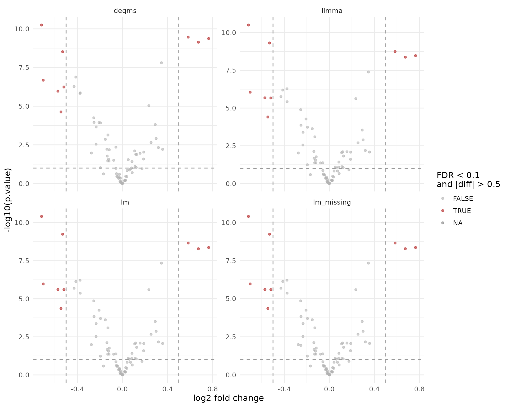

Contrast Facades with Parallel Designs
Witold E. Wolski
2026-03-16
Source:vignettes/ContrastFacades.Rmd
ContrastFacades.RmdPurpose
build_contrast_analysis() provides a common front-end
for several contrast backends:
lmlimmalmerropecalm_missingdeqmsfirth
All of them expose the same basic interface:
get_contrasts(), get_Plotter(), and
to_wide(). All examples below return protein-level
contrasts. The important difference is the required input level:
-
lm,limma,lm_missing, anddeqmsrequire aggregated protein-level data -
lmerandropecarequire lower-level measurements such as peptides nested within proteins, but still report protein-level contrasts -
firthcan be used with either aggregated protein-level data or nested peptide-level data and still reports protein-level contrasts
This vignette starts from one simulated peptide-level experiment, aggregates it to protein level, and then demonstrates both families of facades separately.
Simulate one experiment
istar <- sim_lfq_data_peptide_config(Nprot = 80, seed = 42)
istar$config <- old2new(istar$config)
lfq_peptide <- LFQData$new(istar$data, istar$config)
lfq_peptide <- lfq_peptide$get_Transformer()$log2()$lfq
aggregator <- LFQDataAggregator$new(lfq_peptide, "protein")
lfq_protein <- aggregator$medpolish()
lfq_peptide$config$hierarchy_keys()## [1] "protein_Id" "peptide_Id"
lfq_protein$config$hierarchy_keys()## [1] "protein_Id"
lfq_protein$config$nr_children## [1] "nr_children_protein_Id"The aggregation step produces protein-level intensities while keeping
count metadata in the LFQData object. The DEqMS facade uses
lfq_protein$config$nr_children directly, so no extra count
table has to be passed around.
Define one contrast
contrasts <- c("A_vs_Ctrl" = "group_A - group_Ctrl")Using one contrast keeps the comparisons easy to read while still showing how the different backends behave.
Protein-input facades
The following facades require aggregated input, which in practice
means lfqdata$subject_Id() must match
lfqdata$config$hierarchy_keys(). firth is
included here on purpose because it can be fitted directly on aggregated
protein input.
fa_lm <- build_contrast_analysis(
lfq_protein,
"~ group_",
contrasts,
method = "lm"
)
fa_limma <- build_contrast_analysis(
lfq_protein,
"~ group_",
contrasts,
method = "limma"
)
fa_lm_missing <- build_contrast_analysis(
lfq_protein,
"~ group_",
contrasts,
method = "lm_missing"
)
fa_deqms <- build_contrast_analysis(
lfq_protein,
"~ group_",
contrasts,
method = "deqms"
)
fa_firth_protein <- build_contrast_analysis(
lfq_protein,
"~ group_",
contrasts,
method = "firth"
)Because all protein-input facades share the same interface and report protein-level contrasts, their outputs can be combined directly.
results_protein <- bind_rows(
fa_lm$get_contrasts(),
fa_limma$get_contrasts(),
fa_lm_missing$get_contrasts(),
fa_deqms$get_contrasts(),
fa_firth_protein$get_contrasts()
) |>
dplyr::select(dplyr::any_of(c(
"facade", "modelName", "protein_Id", "contrast", "avgAbd", "diff", "FDR",
"statistic", "std.error", "df", "p.value", "conf.low", "conf.high",
"sigma"
))) |>
dplyr::mutate(
significant = FDR < 0.1 & abs(diff) > 0.5
)
results_protein |>
dplyr::count(facade, name = "n_results")## # A tibble: 5 × 2
## facade n_results
## <chr> <int>
## 1 deqms 78
## 2 firth 80
## 3 limma 80
## 4 lm 78
## 5 lm_missing 80For facades that combine several underlying result types, such as
lm_missing, the modelName column still tells
you where individual rows came from.
results_protein |>
dplyr::count(facade, modelName, name = "n_results")## # A tibble: 6 × 3
## facade modelName n_results
## <chr> <chr> <int>
## 1 deqms WaldTest_DEqMS 78
## 2 firth WaldTestFirth 80
## 3 limma limma 80
## 4 lm WaldTest_moderated 78
## 5 lm_missing WaldTest_moderated 78
## 6 lm_missing groupAverage 2Protein-level volcano comparison
ggplot(results_protein, aes(x = diff, y = -log10(p.value), color = significant)) +
geom_point(alpha = 0.6, size = 1.2) +
facet_wrap(~facade, scales = "free_y") +
geom_vline(xintercept = c(-0.5, 0.5), linetype = "dashed", color = "grey60") +
geom_hline(yintercept = -log10(0.1), linetype = "dashed", color = "grey60") +
scale_color_manual(values = c(`TRUE` = "firebrick", `FALSE` = "grey70")) +
labs(
x = "log2 fold change",
y = "-log10(p.value)",
color = "FDR < 0.1\nand |diff| > 0.5"
) +
theme_minimal(base_size = 12)
Volcano plots for the protein-level facades. Each panel shows the same contrast analysed by a different backend.
Looking at the strongest protein-level hits
results_protein |>
dplyr::group_by(facade) |>
dplyr::slice_min(order_by = p.value, n = 5, with_ties = FALSE) |>
dplyr::ungroup() |>
dplyr::select(facade, modelName, protein_Id, diff, p.value, FDR)## # A tibble: 25 × 6
## facade modelName protein_Id diff p.value FDR
## <chr> <chr> <chr> <dbl> <dbl> <dbl>
## 1 deqms WaldTest_DEqMS Zci7Jw~7064 -0.718 5.63e-11 0.00000000439
## 2 deqms WaldTest_DEqMS 4Y4DYT~0927 0.583 3.43e-10 0.0000000110
## 3 deqms WaldTest_DEqMS 6TevMr~7550 0.765 4.24e-10 0.0000000110
## 4 deqms WaldTest_DEqMS 0CubNR~0890 0.674 7.29e-10 0.0000000142
## 5 deqms WaldTest_DEqMS KVkccD~1805 -0.531 3.00e- 9 0.0000000468
## 6 firth WaldTestFirth DTCi0N~0734 -3.04 1.22e- 1 1
## 7 firth WaldTestFirth XX0Mbp~0735 -3.04 1.22e- 1 1
## 8 firth WaldTestFirth 8mS8sK~0150 -2.20 2.38e- 1 1
## 9 firth WaldTestFirth 9RxUFG~9605 2.20 2.38e- 1 1
## 10 firth WaldTestFirth OrL0ux~1369 -1.69 2.51e- 1 1
## # ℹ 15 more rowsPeptide-input facades
The mixed-effects lmer facade and ropeca
require lower-level measurements below the analysis subject. The
firth facade can also operate directly on peptide-level
LFQData. firth is shown a second time here on
purpose, because it can also be fitted on peptide input. All three still
return protein-level contrasts.
fa_lmer <- build_contrast_analysis(
lfq_peptide,
"~ group_ + (1 | peptide_Id) + (1 | sampleName)",
contrasts,
method = "lmer"
)
fa_ropeca <- build_contrast_analysis(
lfq_peptide,
"~ group_",
contrasts,
method = "ropeca"
)
fa_firth_peptide <- build_contrast_analysis(
lfq_peptide,
"~ group_",
contrasts,
method = "firth"
)ropeca aggregates peptide evidence back to proteins,
whereas lmer models the nested peptide structure directly
before reporting protein-level contrasts. Peptide-level
firth also reports protein-level contrasts. Proteins with
exactly one peptide are fitted without an added peptide term, while
proteins with multiple peptides are fitted with the lowest hierarchy key
added internally.
results_peptide <- bind_rows(
fa_lmer$get_contrasts(),
fa_ropeca$get_contrasts(),
fa_firth_peptide$get_contrasts()
) |>
dplyr::select(dplyr::any_of(c(
"facade", "modelName", "protein_Id", "contrast", "avgAbd", "diff", "FDR",
"statistic", "std.error", "df", "p.value", "conf.low", "conf.high",
"sigma"
))) |>
dplyr::mutate(
significant = FDR < 0.1 & abs(diff) > 0.5
)
results_peptide |>
dplyr::count(facade, name = "n_results")## # A tibble: 3 × 2
## facade n_results
## <chr> <int>
## 1 firth 80
## 2 lmer 51
## 3 ropeca 78
ggplot(results_peptide, aes(x = diff, y = -log10(p.value), color = significant)) +
geom_point(alpha = 0.6, size = 1.2) +
facet_wrap(~facade, scales = "free_y") +
geom_vline(xintercept = c(-0.5, 0.5), linetype = "dashed", color = "grey60") +
geom_hline(yintercept = -log10(0.1), linetype = "dashed", color = "grey60") +
scale_color_manual(values = c(`TRUE` = "firebrick", `FALSE` = "grey70")) +
labs(
x = "log2 fold change",
y = "-log10(p.value)",
color = "FDR < 0.1\nand |diff| > 0.5"
) +
theme_minimal(base_size = 12)
Volcano plots for the peptide-level facades.
Remarks
The facades make it easy to benchmark alternative contrast backends without rewriting the analysis pipeline:
- the protein-level facades now enforce aggregation before modelling
- the peptide-level facades now explicitly require lower-level hierarchy below the analysis subject
- the shared facade API still makes it straightforward to compare methods once the data level is chosen consistently
The results are comparable at the API level, but the comparison is only meaningful when methods using the same biological unit are plotted together.